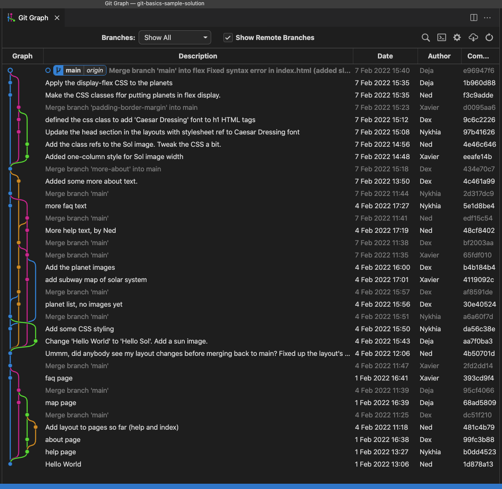
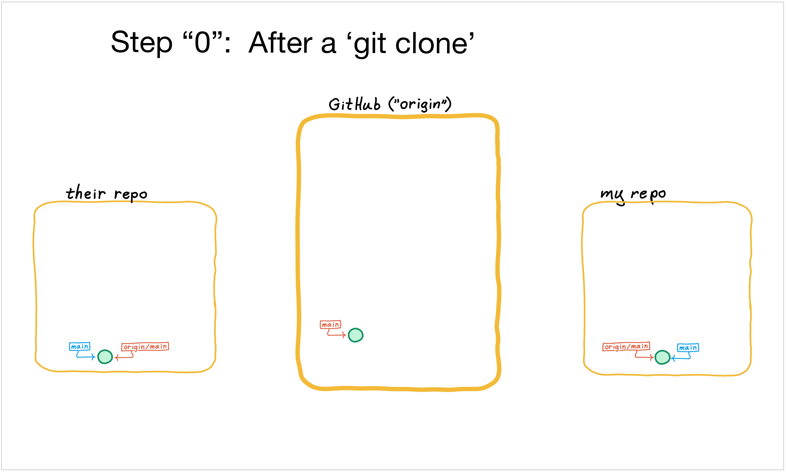
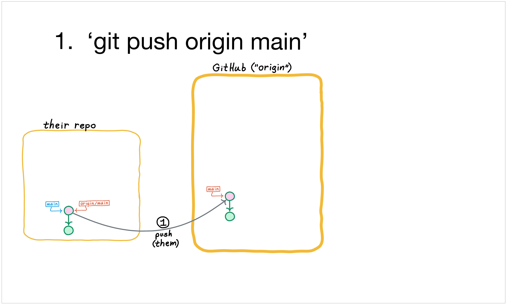
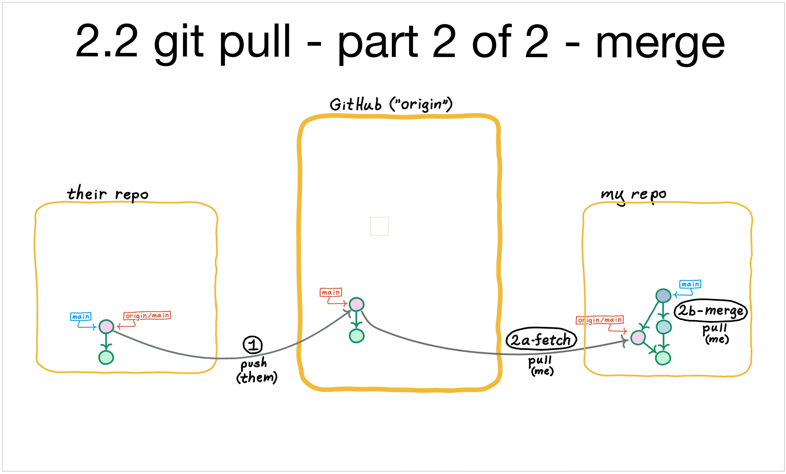

Collaborating with git

Overview
Goal: Unlike Cueball, your team will learn git well enough to collaborate effectively with it! In this two-session hands-on course, you will work as a team to build a simple static website, laying a foundation for communicating about code in a professional development environment.
You will build practical skills with git through hands-on work with git's data model - The Three Objects1 - and moving them around in git's state model - The Three Trees2.
Another major theme is workflows. We will learn and practice some Common Git Workflows, especially those built around Pull Requests, as we build our site. For instance, as your team begins to deliver code, you will encounter challenges (merge conflicts!) inherent to concurrent work on a shared code base, and you will practice using git's and Github's features to resolve them.
Your team will collaborate by working concurrently on changes and delivering to main, aiming toward making your site look more or less like index.html in the sample repo.3
Coding will be kept simple to allow you to focus on git skills; you and your team will modify static HTML and CSS files. The only "webserver" is your local filesystem.
Keep your website viable as you deliver each change to main. Don't "break the build"!
By the end of our time, we'll have substantially covered the topics in the Course Syllabus.
About the instructor
As a devops professional with three-ish decades of experience in version control, I first experienced git in 2009 when our developers insisted on bringing it into the company. I learned a few basic survival commands, but it wasn't really clicking for me. Depressingly often for a version control "expert", I got out of my depth and had to be rescued.
Eventually I tired of memorizing magic spells and decided to buckle down and learn the basics of git. Suddenly, git started making sense😮! That feeling of enlightenment, along with the big boost in my productivity, helped inspire this course.
I've presented some variation of this material to every CodePlatoon cohort since Bravo. Equipped with a firm grasp of these git fundamentals, graduates have reported that they have become go-to resources for git in their software teams.
The three objects are commit, tree, `blob
The three trees are HEAD, index, workspace
You can't view the rendered index.html directly from Github, which only shows the HTML source. View it by cloning the sample repo and opening index.html in your browser (via "File --> Open File...").
Prework for the Git Basics Course
This course assumes you have ...
- A GitHub account.
- Visual Studio Code installed.
- Access to some sort of bash shell: On MacOSX, Terminal.app; on Windows, it would be Windows Subsystem for Linux or Git For Windows.
This prework should only take a few minutes. You'll do a little git environment setup, install the Git Graph plugin, and familiarize yourself with Git Graph by examining a sample repo for a hypothetical project team.
Run these commands in your Terminal.app or Git bash
git config --global pull.rebase false # Tell git what to do when pulling
git config --global core.editor "code --wait" # Set git editor to vscode
cd # Start from your home directory
mkdir -p src
cd src # Or cd to wherever you keep code projects
# Although you won't be committing anything to it,
# you'll use this sample repo as a reference...
#
git clone https://github.com/walquis/git-basics-sample-project-repo
cd git-basics-sample-project-repo
Install the GitGraph plugin in your VSCode
Visit the GitGraph Plugin Install page and follow the install instructions.
Explore the sample repo's code and history
This repo records the work of a five-member team: Ned, Nykhia, Dex, Deja, and Xavier.
Open index.html to view the website in the git-basics-sample-project-repo that you cloned: Choose "File --> Open File..." in your browser, navigate to index.html and open it. You should see something like this...
(You could also view it with a Live Server extension in VSCode).
Point VSCode at the git-basics-sample-project-repo directory, and look at the history with GitGraph:

Some questions the commit graph can help answer
- What is the name of the branch to which changes have been delivered?
- Who added the planet images?
- Are there any changes in the repo that have not yet been delivered?
- Challenge Question - Why was Ned grumpy in his comment on 4 Feb 2022 12:06, commit 4b50701d? What did his teammates miss when they merged?
Explore the code at a specific commit
Hint: You can do a 'detached head' checkout, that is, where HEAD points to a commit rather than a branch name. It's handy for viewing the repo at chosen points in history. For instance, you can open the website in its state as-of a specific commit. Or run the repo's tests (if the repo had tests defined).
What should Xavier have done during his merge to make Ned happy? Who else should have done the same?
$ git checkout 393cd9f4 # Xavier's merge, before Ned fixed things up.
$ open index.html # Explore the website at this point in history.
$ git checkout 4b50701d # Ned's fixes
$ git checkout main # Set HEAD back to a branch reference (`main` in this case).
What's Next?
Take a look at the syllabus.
In class, you and your team will be making changes in parallel that may resemble this sample history, as you experience what collaboration looks like with git.
Explore some Unix/Shell Concepts. I may touch on these briefly in class. Feel free to google around on your own; focus on bash shell concepts, especially I/O redirection, process hierarchy and management, and environment variables.
If you want to go deep before class starts, Reset Demystified will give you a head-start on some of the core class material.
Session One
Setup
- Has everyone done the Prework?
- Open your Linux shell.
- Run these commands to set up some handy aliases...
# Clone this repo only if you haven't already done so...
git clone https://github.com/walquis/git-basics-team-project
cd git-basics-team-project/bin
source git-aliases.sh
- Define your project teams.
- Team: Choose a team lead.
- Team Lead: Create a repo (check the box for including a README).
- Team Lead: Invite your team as collaborators.
- Each Teammate: Clone your team lead's repo (do NOT fork it!).
- Take a look at the sample project repo, if you haven't already.
✅ Checkpoint: Everyone has their team lead's repo cloned (including the team lead).
The Simplest Possible Collaborative Git Workflow
Everybody working on the main branch.
Vocabulary: remote, merge commit, "fast-forward merge"
Commands: git pull, git add, git commit, git push, git fetch, git merge
A basic workflow in the "shared-repo development model":

🤔 What is the difference between a merge commit, and a commit that has a merge conflict?
LAB - Simplest Possible Collaborative Git Workflow
- Each teammate: Commit and push at least one non-conflicting change. For instance, each teammate can add one of these files:
index.html,help.html,about.html,faq.html,map.html.git pushandgit pulluntil all of you have each other's changes and are on the same commit locally.
Anatomy of a Git Commit, or, "The Three Objects"
Vocabulary: sha, content-addressable, blob, tree, commit
Commands:
git show- What's in the latest commit. See Viewing Repo Changes for more.git reflog- local history of where HEAD has been.git cat-file -p- just for teaching purposes; not part of a normal git workflow
Now that we have some commits, let's take a closer look...

🤔 Is it possible for a commit to have the same SHA as its parent?
LAB - Anatomy of a Git Commit, or, The Three Objects
Use
git cat-file -pto answer these questions:
- What fields does HEAD have?
- What kind of SHA is HEAD's "parent" field? (Use
-tinstead of-p)- What fields does HEAD's tree have?
- What are the contents of HEAD's tree's first blob?
Your Local Git repo and The Three Trees - or, "Intro to git reset"
We'll learn to use git reset to move changes back and forth (locally) between the "three trees" - workspace, index, and HEAD. For more in-depth, work thru The Objects and Trees Exercise.
Vocabulary:
- workspace, index, HEAD
- "detached HEAD" state
Commands: git diff, git diff --staged, git reflog, git stash
When I last checked (end of March 2023), six of the top twelve stackoverflow questions were git questions!! For at least a couple of those, the answer is git reset.
A busy diagram--it shows the objects as well as the trees--but worth pondering ...

LAB - Practicing with git reset
Use each of the --soft, --mixed, and --hard options to git reset at least once.
- Make a change and commit it (do not
git push!).- Revert the change using
git reset.- Make another change, and commit.
- Revert, using another option of
git reset. Commit.- Revert, using another option of
git reset. Commit.
We've only used git reset to move our current branch back one commit. But with git reset, we can move our current branch anywhere we want. When might this be useful?
Scenario: You accidentally make commits on main, but then realize you should be on a branch--for instance, in order to push that branch and submit a Pull Request for it (we'll discuss PR's soon).
LAB - Simulate branching "after-the-fact"
- Make 3 or 4 commits on
main. Then realize Oops, I should be on another branch.- Make a branch at your current location. Hover here for a hint.
- Use
git resetto movemainback to where it should be.
{kind=link}
Create And Resolve Merge Conflicts - With Basic Workflow
LAB - merge conflicts
- Each teammate: Change the same line in same file (e.g. Change "The Solar System" in
index.htmlto some other text).- Commit.
- One teammate do a
git push; the othersgit pull.- Among your team, resolve merge conflicts and
git pushuntil you all have the same commit sha for HEAD.
Create And Resolve Merge Conflicts - Using Branches and PR's
Github supports two collaborative development models:
- fork and pull
- shared repository <--- This is us
"In the shared repository model, collaborators are granted push access to a single shared repository and topic branches are created when changes need to be made. Pull requests (PR's) are useful in this model as they initiate code review and general discussion about a set of changes before the changes are merged into the main development branch. This model is more prevalent with small teams and organizations collaborating on private projects."
We'll be working with the shared repository model.
🤔 Why is it called a "Pull Request", if you're pushing changes?
LAB - Create/Handle merge conflicts again - but now using Pull Requests in your workflow
- Each teammate:
git checkout -byourOwnBranchName- Each teammate: Change the same line in same file, like before.
- Commit.
git pushyourOwnBranchName- Go to Github and make a PR for your branch; choose one or more reviewers.
- Reviewers: review/approve the PRs and merge.
- Review and merge,
git pull, etc. until you all have the same commit sha for HEAD.
Breakdown of Simple Collaborative Workflow
This sequence of images represents the progression of a workflow where my teammate first makes a change locally and pushes, and then I also make a change locally--but now I must integrate with their change (via a git pull origin main) before I too can push.
(Note that the images are arranged such that you can bounce between them with right and left arrow keys and visually compare the changes between steps.)
Step 0 - everybody checkout main
When I and my teammates set up to collaborate, we all git clone a shared repo--something like this...
$ git clone https://github.com/org-or-user/the-team-repo # Make local copy of repo
$ git checkout main # Point HEAD at "main"...i.e., make "main" my current branch
In this way, we all start with the same understanding of where branch main is--the commit represented by the green circle.
The origin/main branch, seen in both local repos, is a "tracking branch". git uses it to keep track of where the main branch on the remote called "origin" is pointing.
As you will see, this tracking is not "live"; no automatic notification is happening.
origin/main's
value in my repo is updated only when I perform certain activities--mainly git push and git pull.
Step 0.5 - they commit locally
To kick-off collaboration in this illustration, my teammate does some local work worthy of sharing--the commit represented by the pink circle.
Step 1 - They push main to the remote named "origin"
Now they push their work, with something like this:
$ git push origin main
Notice the two main changes:
- The pink commit has been copied to the remote named "origin".
- The remote's
mainbranch has been updated to reflect the new work--and correspondingly, my teammate's local origin/main tracking branch is updated as well.
Note also that nothing happens in my local repo as a result of their push.
OK, now it's my turn...
I make local changes too, before I've talked with "origin"
My commit is represented by the blue-ish circle.
(Note that my origin/main tracking branch has not yet moved, because I've not yet run any commands that reach out to the remote.)
Step 2.1 - fetch - first 1/2 of pull
I now pull, by running something like this to see if there are changes to integrate (as indeed there are in this case):
$ git pull origin main
A git pull is a two-phase operation (essentially it's a mirror image of git push). The first phase, called "fetch", brings into my repo's DB the news of commits and branches from the remote.
The second phase is "merge".
Essentially, a pull combines these two commands:
$ git fetch origin main # Grab commits associated with current branch, and update tracking branch
$ git merge origin/main # Merge into my current branch from the (now-up-to-date) tracking branch
You can run these explicitly, instead of a git pull; perhaps I want to see what's happened on the remote before I integrate those changes, so I git fetch, and take a look before doing a git merge.
Step 2.2 - merge - second 1/2 of pull
As mentioned, the second half of a git pull is a merge operation; the merge commit is represented by the grayish circle.
By definition, a merge commit is a commit with two or more parents.
(A merge may be automatic, or it may result in a conflict; we'll cover conflicts later in this course.)
Step 3 - I push main to "origin")
Now that I've committed the work onto my local main branch to integrate the changes, I can push that work on main back to the remote called "origin":
$ git push origin main
Now I'm all caught up, and the remote is caught up.
Notice the changes that happen:
- Two commits are sent to the remote: My original local commit, and the merge commit.
- The remote's
mainbranch has been updated to reflect the new work--and correspondingly, my teammate's local origin/main tracking branch is updated as well. In other words, the same process happened for me when I pushed, as happened for them when they pushed.
As before, my push updates the remote (that is "origin", which happens to be Github), but it does NOT update my anything in my teammate's repo. That would require explicit activity on their part.
Finally, note that now my teammate is behind! How would they catch up?







Exercise - Three Objects, Three Trees
(In a 2-day format, this could be assigned as homework).
The goal of this exercise is to solidify two major concepts:
- The Three Objects - the git data model
- The Three Trees - managing local changes
Work through this entire exercise, poking around in the project repo you started in Session 1. We'll have already touched on these concepts, but this exercise is designed to test and expand your understanding.
This should help you hit the ground running in Session Two.
Table of Contents
- Set up git Aliases - Command-line shortcuts for git
- Git versus Github - Which operations go with each?
- The Three Objects - Git's Data Model
- The Three Trees - Managing local changes
Review Basic Unix and Shell.
Set up git aliases
This activates cool bash shortcuts for working with git from the bash prompt.
$ cat bin/git-aliases.sh # See what's there
$ source bin/git-aliases.sh # Activate aliases in current shell
$ bin/append-aliases-to-profile.sh # So they'll be part of future shells.
$ adog # This should work now.
Git versus Github
The git client is a big bag of commands for implementing version control using a local content-addressable DB (aka a repository, or "repo"), as well as efficiently communicating with other, remote repos--a Distributed Version Control System, or DVCS. Git was written by Linus Torvalds in 2005 for version-controlling the Linux kernel.
In 2008, the social coding platform github.com came into existence, built around the git client.
When working with the git client and github.com, it's useful to keep in mind which operations belong to which tool.
| -- git -- | -- github.com -- |
|---|---|
| repo | repo |
| clone | fork |
| commit, push, merge | |
| pull | pull request |
| org, team, collaborator, org owner |
The Git Data Model - The Three Objects
Exploring the git repo - SHAs and objects
The git database
The git DB is "a content-addressable filesystem". That is, objects are stored and retrieved using keys ("addresses") based on their content. These keys are referred to as "SHAs".
How is this done?
From your repo's workspace root, take a look around using the following as a guide. NOTE: Your values for git SHA's will be different than what is shown here, since the contents of your objects are different.
$ git rev-parse HEAD
9cd690631f73c4a396e02348744a3a2379f737bc
$ ls .git/objects/9c # First two characters of HEAD's SHA...
d690631f73c4a396e02348744a3a2379f737bc
Where did the '9cd69...' string come from? It's the address of the latest commit, generated by running that content through a SHA-1 hashing algorithm.
How do we know it's a commit?
$ git cat-file -t 9cd69
commit
What's actually in the commit? Use "-p" instead of "-t" ...
$ git cat-file -p 9cd69
tree 07018552500e8ebd52c2011c51a9b21a01c11ce4
parent b1c24a12c733be55ab2512fc003a84405bf68126
author Chris Walquist <cwalquist@drw.com> 1615843154 -0500
committer Chris Walquist <cwalquist@drw.com> 1615843154 -0500
ignore _site directory
Note the format of the commit record, and its fields: tree, parent, author, committer. (And after a blank line, the comment).
Test your understanding: Are all SHA's commits? Are all commits SHA's? Describe the relationship between a SHA and a git repo object.
Exercise: Commit hi.txt through "normal git commands"
Create a hi.txt file with a line or two of content in it, and commit it into the repo, using the customary git add and git commit (or their equivalent aliases)
- What SHA corresponds to the commit?
- Can you find that SHA under .git/objects?
- Extra credit: Using
git cat-file -p```, can you trace from the commit SHA, all the way to the blob SHA that contains the actual contents ofhi.txt? HINT: there is a 'tree' SHA between the 'commit' and the 'blob', which is revealed through judicious use of `git cat-file -p. What is the SHA of that blob object? - How would you print the contents of your hi.txt file, using `git cat-file -p```?
While we're here...What else can we see in .git?
$ cd .git
$ ls -l
$ file HEAD
HEAD: ASCII text
$ cat HEAD
ref: refs/heads/main
$ file refs/heads/main
refs/heads/main: ASCII text
$ cat !$ # BANG-dollar! bash shorthand for "last argument of previous command"
fc223df6e6f71a506f9bda0fac71b16041fd7004 # Your SHA will differ from this one (why?)
$ ls -l refs
$ ls -l refs/remotes
$ ls -l refs/remotes/origin
$ file refs/remotes/origin/main
$ cat !$
fc223df6e6f71a506f9bda0fac71b16041fd7004
So, how is HEAD stored in the git repo? How about local and remote branches?
The Three Git Objects - Commit, Tree, Blob
What kind of SHA is HEAD?
$ git cat-file -t HEAD
commit
Let's look at the origin/main commit (HEAD was the same as origin/main, until you committed hi.txt).
$ git cat-file -p origin/main
tree 07018552500e8ebd52c2011c51a9b21a01c11ce4
parent b1c24a12c733be55ab2512fc003a84405bf68126
author Chris Walquist <cwalquist@drw.com> 1615843154 -0500
committer Chris Walquist <cwalquist@drw.com> 1615843154 -0500
ignore _site directory
What kind of SHA is 07018?
$ git cat-file -t 07018
tree
What is in 07018? (Remember, your exact SHA, and its contents, will be different than this example)
$ git cat-file -p 07018
100644 blob 2d45b22d4cbfebf78a5c78c46ecdc44fca2e1d27 .gitignore
100644 blob 60cfe42a4102d0ad6be5ec1373f3cec61a439b23 README.md
100644 blob 324e2e0cc5bfe49dd3faef7b674e7ba24c5347a7 app.py
040000 tree 577935a1899acf406349842178b4caf8ab171116 bin
100644 blob f9c1905abf276dce13ee3b883d50e699c450c728 config.py
100644 blob 719b71285df083da25fa967460beee0a520df64c config.yml.sample
040000 tree 6a51471d23a4c65df321b424ba35fb2651c95b9a config
040000 tree 3a8b3bfe5b18db9a7317480cf1ac77d217cc1e34 db
040000 tree 393a18221eb58a427601b4cd3b4cc7490ecc7037 lib
100644 blob 7bac10d65439b807b8cf852b2781d7782725fad3 main.py
040000 tree 8473c63a37cfec1c0458282195054aca4b7564a6 models
100644 blob 308747b19d7876166a1e8385652de498c4743599 requirements.txt
100644 blob 1f8bc52a33198cf0837159cec540611e65365cc1 views.py
What SHA contains the contents of the first entry in 07018? What is that entry's name?
How do you tell whether it's a filename or a directory name? Hint: What kind of SHA is the first entry?
$ git cat-file -p 2d45b
__pycache__
venv
*.swp
*.pyc
*.sqlite3
_site
Consider this git object diagram, courtesy of git-scm.com:

What SHAs from your repo (whether commit, tree, or blob) would correspond to this diagram's latest commit?
So there they are: The Three Objects. commit, tree, and blob. Next up: How do they work in practice?
The Three Trees
HEAD, Index, and Workspace
Git manages your changes using three trees:
| -- Tree -- | -- Role -- |
|---|---|
| HEAD | The latest commit |
| Index | The commit-in-progress, aka "staging" |
| Workspace | Your local filesystem (except for the .git directory itself |
On the 'green path' (that is, no mistakes or side journeys), changes start in the workspace and flow to the index via git add, and finally into the repo via git commit (i.e., the branch to which HEAD points moves to the next commit):
| Tree: | -- Workspace -- | -- Index -- | -- HEAD --
| --: | ---- | ---- |
| Operation: | 1. <make changes> | 2. git add (stage changes) | 3. git commit
See also this workflow diagram from git-scm.com:

Sometimes it's necessary to move changes the other way--for instance, when you need to add a forgotten file, change a commit message, or revert a commit.
git reset: The command that can assist with all this and more. Why is it called "reset"? Possibly because it resets trees to a state that already exists in the repo. Unlike git add and git commit, which push new states INTO the repo, git reset pulls existing state the other way, OUT of the repo, and into one or more of HEAD, the index, and even the workspace.
| Tree | Role | git reset "hardness"needed to move the tree |
|---|---|---|
| HEAD | The latest commit | --soft |
| Index | The commit-in-progress | --mixed (also moves HEAD.) The default. |
| Workspace | Your local filesystem | --hard (also moves HEAD and Index.) |
git reset needs to know two things:
- The "hardness"--that is, how many trees are to be reset, and
- Which commit SHA to (re)set the tree(s) to.
If you just type "git reset", the default hardness is "--mixed", and the default commit SHA is HEAD.
Putting It Together - Moving Objects Among Trees
Let's follow a single file through this workflow, starting with workspace changes, which will move into the index, and then into a commit. Then, we'll revert it, tree by tree, all the way back using git reset.
1. Move a change forward through the trees
Make a change (which tree are you working in now, as you run the following commands?) ...
$ code index.html # (or whatever file you may have in your workspace)
# Make a minor change to index.html in your editor, and save it. Then...
$ git status # or use the 'gs' alias
$ git diff # or use the 'gd' alias
Add to the index.
$ git add views.py # or 'ga' aFile.txt
$ git status
$ git diff
$ git diff --staged # or use the 'gds' alias
Which tree (or trees) have the change now?
Commit it...
$ git rev-parse HEAD
$ git commit -m "Commented in views.py" # or use the 'gc' alias: gc -m "Commented..."
$ git status
Now which tree (or trees) have the change?
2. Move the same change backward through the trees
Recall that besides specifying "hardness", we need to tell git reset the commit-SHA to align with--that is, which SHA to reset to.
(What is the previous value of HEAD?)
$ git rev-parse HEAD
$ git reset
$ git rev-parse HEAD # What happened? Why?
$ git rev-parse HEAD^ # What does the caret (^) mean?*
$ git status
$ git reset --soft <previous-value-of-head>
$ git rev-parse HEAD
$ git status
$ git diff
$ git diff --staged
* To understand ^, ~, @{push}, and other revision notation, see Git Revisions.
What happened? What is git status telling you, and why?
What happened to the commit that we were on before doing a `git reset```? How might we get back to it?
Now the branch that HEAD points to has been "reset", back to where it was before we committed. Which tree has changed?
Let's change the next tree...
$ git reset # Same command, but now something happened. Why?
$ git status
$ git diff
$ git diff --staged
What changed this time?
Let's change the third tree...
$ git reset --hard
$ git status
$ git diff
$ git diff --staged
Test your understanding:
- What happened to each tree at each step?
- How is
git reset <paths>the opposite of `git add```? - When would each variation of
git resetcome in handy?
Another picture of how "git reset --soft/mixed/hard <ToThisCommit>" works
| "hardness" | Trees that are reset <ToThisCommit> | ||
|---|---|---|---|
| Workspace | Index | HEAD | |
| --soft | - | - | YES |
| --mixed | - | YES | YES |
| --hard | YES | YES | YES |
Session Two - Exercising your new git skills to run a project
Where to Start? With a Github project board!
Here's what a board for the sample Solar System website might look like:

Github Projects have lots of features and options for integration with repos, issues, PRs, etc.
Some jumping-off points:
LAB - Start your project board
- Team lead: Create a kanban project in your GitHub org, and invite your teammates.
- Each teammate: Choose a task from this list of changes from the sample project repo, and create a card for it, with your name on it:
LAB - Each Team, Run your project
Spend about 45 minutes implementing the changes you have chosen.
- Deliver your changes using Pull Requests.
- Keep your project board up-to-date as you go.
If your team gets stuck, get an instructor's attention and we'll work on it together!
Intro to git rebase
"Replay a series of commits onto a starting point". When might this be useful?
A couple of common scenarios:
Avoid Unnecessary Merge Commits
Scenario: You are working on a shared branch. You make some commits, but then realize you haven't first "caught up" (i.e., git pull) with what's been going on remotely. (A common way to "realize" this is to attempt to push, and get rejected).
A variation of this scenario is that you were caught up when you started working, but in the meantime someone else has pushed.
You can do a git pull now, which will result in a merge. But merging for no good reason is probably not a very good option. In other words, if you'd started with git pull, there would be no merge commit.
Fortunately, if you want a more linear history, a single git rebase command will allow this. Simply git fetch (which updates your local git repo with news from the remote), and then git rebase onto the tip of the branch you're tracking.
For instance, if you're working on main, and then realize origin/main is ahead of you, you can do something like this to re-home your local main to the latest origin/main:
$ git fetch # Update your local origin/main pointer
$ git rebase origin/main # Replay your changes on top of where origin/main is now
Robust discussion happens around what constitutes a "good reason" for a merge versus a rebase. Some considerations:
- Is there a chance the change on the branch will be rolled back? Then merge.
- Would it be useful to refer back to the branch in the future (i.e., to diff it)? Then merge.
- Are there remote dependencies on the branch? Then merge.
- Is the branch not remarkable in any way? Then rebase for a linear history.
- Want to minimize the commits with "Merge branch
maininto ..." messages? Then rebase your feature branch onto your base branch, and merge your feature branch into your base branch.🤔 What is meant by this statement? "Rebase is a destructive operation."
LAB - Simulate the above scenario and practice resolving it with git rebase:
- Checkout a branch that starts 3 or four commits before
main. Hover here for a hint.- Make a couple of commits on that branch.
- Then use
git rebaseto replay those commits ontomain.
{kind=link}
Interactive rebase (git rebase -i) -- Edit Commit History Before Pushing
LAB - Make 3 or 4 commits on current branch, and squash/rearrange with git rebase -i
Intro to git cherry-pick -- if time
Somewhat like git rebase. By default, only takes the one commit you specify and commits it to your current branch.
Wrap-up
[link to feedback survey]
Common Git Workflows
A Basic Workflow - everybody do their work on main
A dizzying variety of workflows exist, but at some point they pretty much all boil down to (a) merging your team's changes with with your own, and (b) delivering them back to the team.
Here's one way to accomplish it: Work on a local main branch that tracks the main of your remote, i.e., origin/main1, where your team will rendezvous with changes.
git checkout main- Get onto the branch from which you will push changes.git pull origin main- Catch your localmainup with latest changes from your team.- Implement your feature and test it.
git addandgit commityour changes on your localmain.git pull origin main(in case more changes have been pushed by teammates while you were working).- If there are changes from "upstream", a merge will happen (you may need to resolve conflicts).
git push origin main- Share your scintillating creativity with your team by "catching-up the remoteorigin/mainto yourmain. (If someone else pushed first--since your lastgit pull--you'll have togit pullagain. Then beg your team to hold off, it's your turn now!)
A Pull Request Workflow
Instead of working-on/pushing main, create/work-on/push a feature branch, and ask someone to look at it before it joins main.
git checkout main- The branch from which you will branch.git checkout -b myfeature- Create and checkout a newmyfeaturebranch.- Implement your feature and test it; add and commit your changes on
myfeature. git push origin myfeature- Make yourmyfeaturebranch visible to the team.- Go to Github and create a Pull Request (PR) for
myfeature. Choose one or more reviewers. - The reviewers look at your diffs, optionally make comments, and approve & merge
myfeaturetomain. git checkout main- Go back to main so you can catch up.git pull- Grab the latest changes, including your merged PR.
Resolve Merge Conflict
Merge conflicts (aka "collisions") happen whenever git's merge algorithm does not have enough info to make the call--for instance, when a given line in a file has been changed in different ways by two parent commits.
Let's make the above-described kind of merge conflict happen:
- First, make a change to conflict with, by adding a file with one line:
$ git checkout main
$ git show
$ echo "HI THERE" > aNewFile
$ git add aNewFile
$ git commit -m "A new file with one line"
- Checkout a new branch
testfrom the parent commit of main's HEAD.
$ git checkout -b test HEAD^
- Make a one-line file of the same name as the one created on main.
$ echo "HI THERE, I'm on a different branch" > aNewFile # Because on this branch, starting from where we did, aNewFile isn't there yet.
$ git add aNewFile
$ git commit -m "A new file with one line, but from a different branch"
- Now, attempt to merge from main.
$ git config --global core.editor "code --wait" # Set git editor to vscode (only need to do this once)
$ git merge main
Auto-merging aNewFile
CONFLICT (add/add): Merge conflict in aNewFile
Automatic merge failed; fix conflicts and then commit the result.
$ git status
$ code aNewFile
Git has modified our source file!
Note that VSCode has added some helpful "phantom text"--'(Current Change)' and '(Incoming Change)'--to help clarify what's what. Note also, that text isn't part of the file.
When you've made the file how you want it, and saved it, git add to tell git it's OK now (as git itself tells you when you do git status).
Finally, finish the merge with a git commit (again, as git status instructs)..
Save Current Work and Return to it Later
$ git stash # Push current work--your index and modified stuff--onto a "stash stack".
$ git status # Now your workspace is clean (except for files that aren't in git).
$ git checkout -b someNewBranch # Or some existing branch
# Do the work that has pre-empted you, commit/push/etc, and now return to your story...
$ git checkout main
$ git stash pop # Restore your current work to this workspace
$ git stash list # See if anything still on the stash stack.
Clean Up Commit History Before Pushing - git rebase
This is another instance of using git to practice good communication etiquette. Nobody wants to see my stumbling around; they just want to see the final draft.
Assuming I've made a series of commits I don't want people to see, I can turn them all into one commit, while still keeping the same content!
(You may first want to set your git editor to vscode, as demonstrated above in "Resolve Merge Collision").
$ git config --global core.editor "code --wait" # Set your editor to vscode
$ git rebase --interactive <some-commit-before-the-commits-to-fix>
See the git rebase tutorial for details on how to work thru the rebase.
Forgot to pull before committing
This workflow is very common for me!
Another variation of this workflow is "started-my-work-on-wrong-branch".
It typically goes like this:
- I cd into a repo workspace that I already have cloned, but haven't touched in awhile.
- I make some changes and commit.
- I
git push. - Git rejects my updates with something like:
! [rejected] main -> main (non-fast-forward)
error: failed to push some refs to 'git@github.com:walquis/learning-git'
hint: Updates were rejected because the tip of your current branch is behind
hint: its remote counterpart. Integrate the remote changes (e.g.
hint: 'git pull ...') before pushing again.
hint: See the 'Note about fast-forwards' in 'git push --help' for details.
You can re-enact this scenario in your own repo, by moving your local main branch to one commit behind origin/main. (How would you do that? Hover here to see.)
Now change a file and git add/commit/push.
What happened? Your main has diverged from origin/main.
What now? Some options:
- Pull-and-merge - valid, but creates a merge for no good reason - messy graph, confuses your team
- Reset, pull, cherry-pick - makes the graph look like you want it to
$ git reset --hard @^ # Tip: '@' is a synonym for HEAD
$ git pull
$ git cherry-pick <sha-of-commit-you-couldn't-push>
- Git rebase - "Replay" changes onto another commit
$ git fetch # Remember, 'pull' is a fetch and merge...but I don't want to merge this commit
$ git rebase origin/main # Replay current branch's changes onto origin/main
This is easier and more straightforward than cherry-pick, especially if I've made multiple changes.
Find a Bad Commit - git bisect
Sometimes when a bug creeps in, it's hard to find where it happened. git bisect helps you walk through a range of commits in a binary search.
$ git help bisect # You can also 'git help' any other git command.
$ git bisect start <known-bad-commit> <older-known-good-commit>
# Test the code in your workspace to see if the current version is good.
$ git bisect good # Or bad, if the test fails
# Git will keep iterating until the bad commit is identified.
...
$ git bisect reset # Go back to the head of the branch
This is effective, but a little tedious. What if we could automate it? If you can create a test.sh script that git can run for you, which will exit with status 0 (true) if the test succeeds, and non-zero (e.g. 1, which will mean false), then git bisect can use that script:
$ bash test.sh
$ echo $? # 0 if good, 1 if bad
$ git bisect start <known-bad-commit> <older-known-good-commit>
$ git bisect run bash test.sh
assuming your remote is named origin. It probably is.
Hints For Viewing Repo Changes
Git Diff - the command line
Note that the diff'ing methods below only compare commits, that is, changes already committed to the repo. They don't address contents of your working directory or index. For that, use "git diff" (which shows your index vs. workspace), or "git diff --staged" (HEAD vs. index).
- See a given commit's diffs relative to its parent commit...
In this form of git show, you see ONLY a single commit's diffs, even if you provide a branch name instead of a sha. Just saying git show displays your most recent commit's changes.
$ git show 3f29a16 # (Substitute your own commit sha)
git show can be handy whenever you just want to see a single commit's worth of diffs. You can do this from anywhere--there is no need, for instance, to get your workspace into a clean state, checkout a particular branch, and "git diff".
- View diffs on an entire branch, relative to another branch...
$ git diff main..otherbranch # In the diff output, main is on the left, otherbranch on the right.
- Exclude files from diff... For some branch comparisons, you may want to exclude one or more files from the
git diffoutput. For instance, no need to see an entire jquery file when it's added to the code base. And, you may not want to view diffs in a "docs" directory ...
$ git diff main..sample-solution ':(exclude)*jquery*.js' ':(exclude)docs/'
View your changes on github.com
Navigate to your repo on https://github.com. Then click "Contribute", directly under the green "Code" button, then "Compare". This will show diffs with respect to main.
Download SourceTree and point it at your local repo
Or download another git GUI, such as Github Desktop--but SourceTree is quite good.
Browse the changes, and explore the options for viewing changes--for instance, highlighting multiple commits with shift-click will show diffs across those commits; also, the file viewer can switch from flat list to tree view; etc.
Some knowledge and experience with the following material will be very helpful going into the git class.
Basic Unix Commands
- ls, and its '-l', '-a', '-r', and '-t' options
- pwd - print working directory
- cd - change directory
- cat - 'concatenate'
- grep - 'get regular expression and print'
- mkdir - 'make directory'
- vim - The Best Editor in the World (or at least really good)
- ps - process status
Unix/Shell Concepts
This is the "air you breathe" when working on a computer running any variant of Unix--whether Linux, Mac OS X, Ubuntu-on-Windows, Cygwin, etc.
- The Bash shell; .bash_profile and .bashrc
- Environment Variables
- The PATH environment variable
- Standard Input (aka STDIN), Standard Output (STDOUT), Standard Error (STDERR)
- Pipes (that is, the vertical bar, '|') and I/O Redirection (e.g., '<', '>', '<<', '>>', '2>&1')
Syllabus for Collaborating with git
We will learn how git's data model, The Three Objects, forms the basis of a git repo's architecture.
We will learn to use git's state model, The Three Trees, to confidently manage changes between a workspace and a local git repo.
We will learn to use Pull Requests within git workflows to communicate our changes to others.
In the course of running a collaborative software development project, you will use various git commands in a Bash shell to examine and change the state of git objects in these trees on your local machine. Some of these commands may be familiar (e.g., git checkout, git add, git commit, git status, git diff) and some may not (git reset, git diff --staged, git rebase, git cherry-pick).
Using pull requests (aka PR's), you will communicate local changes to your team for review and integration into the team's shared work stream.
Goals
- Know how to read the commit graph, and use git commands confidently to make it look like you want.
- Understand how basic git commands such as
git add,git commit, andgit resetmove the state of your local changes among The Three Trees. - Understand The Three Objects of the git data model well enough to know what git operations are required in real-life scenarios.
- Make changes confidently, by knowing specifically how git has your back.
Objectives
By the end of this course, students will be able to...
Demonstrate these skills:
- Use Pull Requests to deliver changes for review by one or more members of your team
- Work as a team to deliver changes to a chosen remote and branch
- Manage commits with
git resetandgit rebase- including undo, modify, move operations - Resolve merge collisions
- Stash work and return to it
Explain these terms and concepts:
- sha
- content-addressable filesystem
- blob, tree, commit
- workspace, index, HEAD
- symbolic ref
- branch
- remote
- fetch vs. pull
- fast-forward merge
- 'detached HEAD' state
Use these commands, and understand them in terms of the 3 objects/3 trees:
- git add
- git status
- git diff [--staged]
- git show
- git commit
- git reset [--soft, --mixed, --hard ]
- git branch
- git merge
- git stash - "I need to save what I'm working on and come back to it later"
- git cherry-pick
- git rebase -i - clean up commit history before pushing
- (stretch goal) git bisect - find a bad commit
Identify and explain these components of a repo graph (as seen with "git log --all --decorate --oneline --graph"):
- HEAD
- main
- origin/main
- shas
- the lines along the left side
- branch/merge points
Three Objects
Git is a brilliantly simple data model surrounded by a dense constellation of commands and options. Once you know the model, you know how the graph should look. Then you are equipped to find the command that does want you want.
Git Objects at git-scm.com is good reading.
- Commit and its attributes
- Tree and its attributes
- Blob and its attributes
Three Trees
The word "reset" is loaded with many connotations. In a git context, you can read git reset as "set-current-branch-to-an-existing-commit". We'll explore how this works for managing local changes.
git-scm.com's Reset Demystified is also good reading.
These are the three trees:
- HEAD - pointer to the current branch, which points to a commit
- Index - the place you add to; the staging area for commits
- Workspace - the files checked out on disk (not including the git repo itself - that would be too meta)
References
Most of these are from Git-Scm
-
1.1 - Nice-to-Know - Skim - 3 min - About Version Control
-
1.3 - Fundamental - Read Carefully - 10 min - Git Basics
-
2.2 - Fundamental - Skim - 5 min - Recording Changes to the Repo
-
2.5 - Fundamental - Skim - 5 min - Working With Remotes
-
5.2 - Nice-to-Know - Skim - 10 min - Contributing to a Project
-
Essential - Git Objects - The Three Objects: Commit, Tree, Blog
-
Essential - Reset Demystified - The Three Trees: HEAD, Index, Workspace
-
Rebase - Replay a string of commits onto another place
-
Cherry-pick - grab a commit from another branch
-
Bisect - Find the commit with the bug
-
Highly Recommended - A bash tutorial, such as Bash Scripting For Beginners. At a minimum, know these basic Linux commands.
-
Be Your Own Best Friend - Learn Vim. Just learn it. Here, here, here, and/or here.
-
gitready.com - Learn git one commit at a time - Extensive set of tutorials; somewhat dated (2009-ish), but still good stuff. Nice breakdown of skills into beginner/intermediate/advanced, and a list of resources.
Instructor notes
Sample project repo
- Commits in this repo are a source for ideas of what kind of work teams can do.
- Ned, Nykhia, Dex, Deja, Xavier
Overview
- In session 1, lessons introduce material organized around TERMS and COMMANDS from the syllabus.
- Session 2 is primarily project time for practicing git skills in a moderately structured exercise.
Housekeeping items
- Take breaks every 30-45 minutes.
- At checkpoints, have the class use Zoom's green-checkbox and red-X "reactions" buttons. For instance, "Who has your team's repo cloned locally? Give me a green checkbox if yes, red-X if no." NOTE: Unlike the quick-reaction icons along the top, these responses will stay up until the students take them down.
- They can also use the "speed up" and "slow down" buttons.
Session 1
Setup
- If Zoom, get a breakout room set up for each team.
- Have each team rendezvous on Slack.
- Ppl will need to authenticate with a Personal Access Token, since they (probly) don't have SSH keys set up.
- Make sure everyone is set up in their project team.
- Prework: Ask ppl for red/green reactions w.r.t. completion.
- If most ppl haven't done it, go over the setup parts.
The Simplest Possible Collaborative Git Workflow
DESCRIBE the workflow embodied by the pull-merge-push diagram.
- Context: 'their repo' and 'my repo' are both cloned from the same repo at the same remote, labeled 'origin' (that is, Github).
POINTS TO MAKE:
-
git pullis a combination ofgit fetchandgit merge. -
a
git pullfrom one side looks and mostly works like agit pushfrom the other side (i.e. a "fetch" and a "merge"). -
Talk about what the arrows on the git graph represent. They are NOT pointing forward in time. Rather, because they represent a commit' pointer to its parent, they point backward to the previous commit (or commits). This is how git draws its graphs, starting with a branch, and why commits are generally not visible when no more branches are pointing to them.
-
Using Concepts drawings on iPad, walk through a 'fast-forward' merge (which is what the 'git push' accomplishes from Github's perspective).
-
Trace how
origin/mainand the remote'smainmove as a result ofgit pushandgit pull(and how they do NOT move for local operations such asgit commit). -
"Does Github do a merge when I push?" (No, I've already done the merge locally; it only updates its branch pointer and commits--including the merge commit--associated with the branch I'm pushing.)
DISCUSS: 🤔 What is the difference between a merge commit, and a commit that has a merge conflict?
- Does a merge always mean a conflict? No.
- What is a merge commit? A commit with 2 or more parents.
- What is a merge conflict? A merge (or rebase--we'll learn about rebase later) in which git cannot decide which change to take.
LAB - Simplest Possible Collaborative Git Workflow
- Ask ppl to post green Zoom reactions upon completion of lab.
- Or red Zoom reactions if stuck.
DISCUSS:
-
What was your impression of the collaborative experience?
-
What was difficult?
-
Any ideas about how it might be made smoother, or better in other ways?
-
Time for a break?*
Anatomy of a Git Commit, or, "The Three Objects"
POINTS TO MAKE:
- Git has your back! Commits (and other sha objects) don't go away when you stop referring to them; they're still in the repo.
- Discuss "Content-addressable". What happens when a commit's information changes? Its address changes.
- Reference the commit/tree/blob pic.
🤔 Is it possible for a commit to have the same SHA as its parent? DISCUSS:
-
What would have to be true for this to be the case? (All info in each commit must be identical).
-
A commit's
parentfield is part of that info. -
LAB: Ask ppl for red/green reactions w.r.t. completion of the lab.
Your Local Git Repo and the 3 Trees, or, Intro to git reset
POINTS TO MAKE:
- Git has your back (again).
git refloglets you retrace your steps.git stashlets you switch contexts quickly.
git resetis a local-only command.
We've only used git reset to move our current branch back one commit. But git reset will move our current branch anywhere we tell it. When might this be useful?
-
When re-arranging branches. Suppose you made changes on
main, but meant to branch first? Just make the branch where you're at, and movemainback to where it belongs (as long as you haven't pushed those changes yet). -
Time for a break?*
Have a conversation about doing a git reset to something before origin; and relatedly, git push -f and its pitfalls.
Create And Resolve Merge Conflicts - With Basic Workflow
TERMS:
- merge conflict
git fetchvs.git pull
COMMANDS:
git branch
Create And Resolve Merge Conflicts - Using Branches and PR's
TERMS:
- branch
COMMANDS:
git branch
DISCUSS: 🤔 Why is it called a "Pull Request", if you're pushing changes?
- Back in the day, with Github's original fork/pull model, an actual
git pullhappened when the request was granted, since multiple remote repos were involved: the source repo and its fork. Agit pullfetched-and-merged the changes from the forked repo to its source repo. - In the shared-repo model however, no
git pullis involved, since you've already pushed your changes to the source repo (although on a different branch). However, you are still "requesting" for your changes to be "pulled" into the main development stream; so in a logical sense, it's still a "request for a pull".
Session Two
More workflow tools - git rebase and git cherry-pick
COMMANDS:
git rebasegit cherry-pick
9:30-10:30 a possible breakdown of tasks:
Deja - Change ‘Hello World!’ to ‘Hello Sol!’. Add a sun image.
Nykhia - Begin to use CSS styling. Change the font of headers. [This will touch the layout, therefore everything!]
Dex - Add a list of first four planets to index.html, with content (images and/or summaries). Couple of commits and pulls-from-main before delivering.
Put content in the pages: (relatively independent changes)
- Xavier - A solar system map
- Ned - more help
- Nykhia - more faqs
- Dex - Add some more about text.
Session 2 - Exercising your new git skills
Where to Start? With a Github project board!
LAB - Start your project board
LAB - Each Team, Run your project
Intro to git rebase
Avoid Unnecessary Merge Commits
Discuss the statement, "Rebase is a destructive operation". This is an opportunity to further sink in the concept of how SHAs are created: by hashing a git object's contents.
- What is being destroyed? Even if a commit's content remains the same (its trees and blobs), the commit itself is going to have different content (e.g., date). Therefore, if another commit B was pointing to commit A, that commit B will not hear about A's replacement.
LAB - Simulate the above scenario and practice resolving it with git rebase:
Interactive rebase (git rebase -i) -- Edit Commit History Before Pushing
LAB - Make 3 or 4 commits on current branch, and squash/rearrange with git rebase -i
Intro to git cherry-pick -- if time
Wrap-up
- Xavier and Ned - Put padding/borders/margins around images.
- Xavier - create the branch, make the CSS class
- Ned - add the class references to the images
- Apply Caesar Dressing font to h1 HTML elements.
- Nykhia - Update the head section in the layouts.
- Dex - Define the CSS class for h1.
- Ned and Deja - Apply flex display to planets.
- Ned - Make the CSS classes
- Deja - Apply to the planets